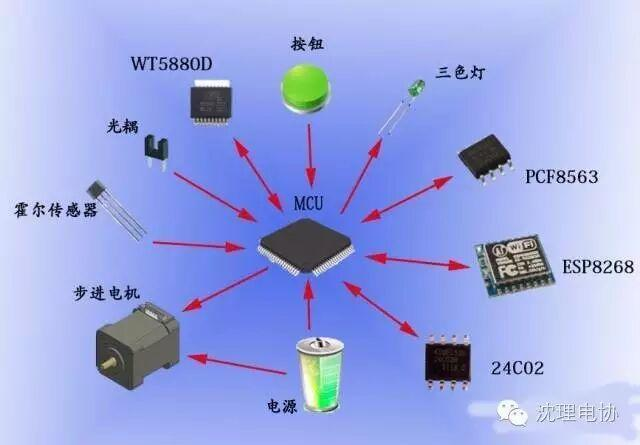
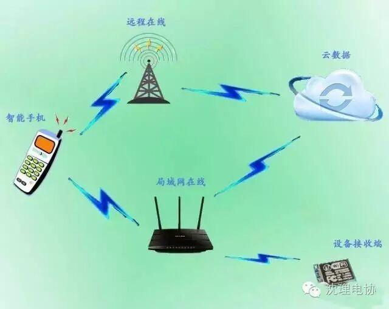

使用小程序
“哎呀，忘了”！随着生活节奏的加快，年龄的增长，人们的总容易忘记一些事情，比如忘记吃药。尤其是家中的老人，由于身体问题，可能需要长期服药治疗，但年岁大了总容易忘这忘那的。但在科技快速发展的今天，这些都不是问题，我们设计并开发了一款名为“健康卫士”的智能药盒，可以联网监测用户的服药情况，提示用户服药，并且根据用户设定自动提取所需药物。
硬件系统主要是pcb 走线布局 +stm32（C语言 功能实现）+wifi(esp8266)+机智云平台

软件部分主要是用机智云的sdk,集成了机智云的sdk,开发起来还是很好入门的，向我这种小白在学了两个星期后就基本入门了，加上自己做的UI就可以了。代码在附件内容。

电气部分：通过重新设计板子设计基于机智云平台的设备，设计集成了若干模块，主要包括eeprom，时钟模块、运动驱动模块、语音提醒模块、传感器模块（温湿度、霍尔、光耦）、网络模块。
药盒模型：重点解决自动提取药物部分的模型（转盘式双层筛板）
云：使用机智云平台，独立搭建数据点。
APP：与机智云平台和MCU通讯，从而进行对智能药盒的管理控制；远程监控；远程提醒，远程温湿度查看。
1 语音播报
通过wt588d, 进行语音提醒 ，感情切（也可以自己录音哦）
2 断电后数据不丢
通过数据保存（一次设定，全程无忧）。（再也不用担心重复设定了）
3 自动化分拣药品种类
每天还在想那个药品吃多少吗（你就out 啦 ，全新智能药盒， 再也不用烦恼了 ）
信息部/黄治勇